This chapter revises the construction of geometric figures using only a compass and a
ruler. You will revise and further explore constructions such as perpendicular lines, angle bisectors and special angles, because these constructions can help you to understand other constructions and properties of 2D shapes. You will investigate the relationships between angles inside and outside of a triangle, as well as congruency of triangles. Furthermore, you will find out about the diagonals of quadrilaterals, and the interior angles of different polygons.
10.1 Constructing perpendicular lines 177
10.2 Bisecting angles 180
10.3 Constructing special angles without a protractor 182
10.4 Angle bisectors in triangles 184
10.5 Interior and exterior angles in triangles 185
10.6 Constructing congruent triangles 187
10.7 Diagonals of quadrilaterals 192
10.8 Angles in polygons 195

10 Construction of geometric figures
10.1 Constructing perpendicular lines
revising perpendicular lines
In Grade 8, you learnt about perpendicular lines.
1. What does it mean if we say ‘two lines are perpendicular’?
2. Use your protractor to measure the angles between the following pairs of lines. Then state whether they are perpendicular or not.
(a) (b)

lines that form when circles intersect
1. Do the following in your exercise book:
(a) Use a compass to draw two overlapping circles of different sizes.
(b) Draw a line through the points where the circles intersect (overlap).
(c) Draw a line to join the centres of the circles.
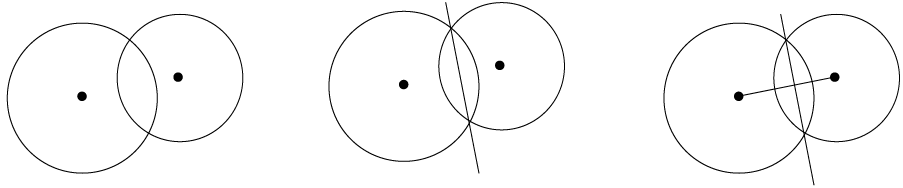
Step (a) Step (b) Step (c)
(d) Use your protractor to measure the angles between the intersecting lines.
(e) What can you say about the intersecting lines?
If all the angles at the point
of intersection are equal, then they are all right angles, and the lines are
perpendicular to each other.
2. Repeat questions 1(a) to (e) with circles that are the same size.
3. What conclusion can you make about a line drawn between the intersection points of two overlapping circles and a line through their centres?
The two lines are perpendicular to each other.
using circles to construct perpendicular lines
Case 1: A perpendicular through a point that is not on the line segment
Copy the steps below in your exercise book.
|
You are given line segment MN with point P at a distance from it. You must construct a line that is perpendicular to MN, so that the perpendicular passes through point P.

|
Step 1
Use your compass to draw a circle whose centre is the one end point of the line
segment (N) and passes through the
point (P).

|
|
Step 2
Repeat step 1, but make the centre of your circle the other end point of the line
segment (M).

|
Step 3
Join the points where the circles intersect: PQ ⊥ MN

|
Case 2: A perpendicular at a point that is on the line segment
Copy the steps below in your exercise book.
|
You are given line segment XY with point Z on it. You must construct a perpendicular line passing through Z.
|
Step 1
Use your compass to draw a circle whose centre is Z. Make its radius smaller than ZX. Note the two points where the circle intersects XY.

|
|
Step 2
Set your compass wider than it was for the
circle with centre Z. Draw two circles of the
same size whose centres are at the two points
where the first (black) circle intersects XY. The two circles (green) will overlap.

|
Step 3
Join the intersection points of the two overlapping circles. Mark these points C and D: CD ⊥ XY and passes through point Z.
|
practise using circles to construct perpendicular lines
In each of the following two cases, draw a line that is perpendicular to the segment, and passes through the point P.
1.

2.


10.2 Bisecting angles
using circles to bisect angles
Work through the following example of using
intersecting circles to bisect an angle. Do the steps yourself in your exercise book.
The word bisect means ‘to cut in half’.
|
You are given A C. You must bisect the angle. C. You must bisect the angle.

|
Step 1
Draw a circle with centre B to mark off an equal length on both arms of the angle. Label the points of intersection D and E: DB = BE.

|
|
Step 2
Draw two equal circles with centres at D and at E. Make sure the circles overlap.

|
Step 3
Draw a line from B through the points where the two equal circles intersect.
This line will bisect the angle.

|

Same construction as in step 3 above
Can you explain why the method above works to bisect an angle?
Can you also see that we need not draw full circles, but can merely use parts
of circles (arcs) to do the above construction?
practise bisecting angles
Bisect the angles below without using a protractor.

10.3 Constructing special angles without a protractor
Angles of 30°, 45°, 60° and 90° are known as special angles. You must be able to construct these angles without using a protractor.
constructing a 45° angle
You have learnt how to draw a 90° angle, and how to bisect an angle, without using a protractor. Use this information to draw a 45° angle at point X on the
line below.
Hint: Extend the line to the left of X.

constructing 60° and 30° angles
1. What do you know about the sides and angles in an equilateral triangle?
2. In your exercise book, draw two circles with the following properties:
- • The circles are the same size.
- • Each circle passes through the other
circle’s centre.
- • The centres of the circles are labelled A and B.
- • The points of intersection of the circles are labelled
D and E.
An example is shown on the right.
3. Draw in the following line segments: AB, AD and DB.
4. What can you say about the lengths of AB, AD and DB?
5. What kind of triangle is ABD?
6. Therefore, what do you know about ,  and
and  ?
?
7. Use your knowledge of bisecting angles to create an angle of 30° on the construction you made in question 2.
8. Use what you have learnt above to construct an angle of 60° at point P on the following line segment:

constructing the multiples of special angles
1. Complete the table below. The first one has been done for you:
|
|
|
|
|
|
30°
|
30°; 60°; 90°; 120°; 150°; 180°; 210°; 240°; 270°; 300°; 330°
|
45°
|
|
|
60°
|
|
90°
|
|
2. In your exercise book, construct the following angles without using a protractor.
You will need to do more than one construction to create each angle.
(a) 120° (b) 135° (c) 270° (d) 240° (e) 150°
10.4 Angle bisectors in triangles
You learnt how to bisect an angle in Section 10.2.
Now you will investigate the angle bisectors in a triangle. An angle bisector is a line that cuts an angle in half.
1. (a) Bisect each of the angles of the acute triangle below.
(b) Extend each of the bisectors to the opposite side of the triangle.
(c) What do you notice?
2. (a) Do the same with the obtuse triangle.
(b) What do you notice?

3. Compare your triangles with those of two classmates. You should have the same results.

|
|
You should have found that the three angle bisectors of a triangle intersect at one point.
This point is the same distance away from each side of the triangle.
|
10.5 Interior and exterior angles in triangles
what are interior and exterior angles?
|
|
An interior angle is an angle that lies between two sides of a triangle. It is inside the triangle. A triangle has three interior angles.
An exterior angle is an angle between a side of a triangle and another side that is extended. It is outside the triangle.
|
Look at ∆PQR. Its three sides are extended
to create three exterior angles.
Each exterior angle has one interior
adjacent angle (next to it) and two
interior opposite angles, as described
in the following table.
|
|
|
|
|
1
|
x
|
z and y
|
|
2
|
y
|
x and z
|
|
3
|
z
|
x and y
|
identifying exterior angles and interior opposite angles
1. Name each exterior angle and its two interior opposite angles below.
(a) (b) (c)

2. ∆ABC below has each side extended in both directions to create six exterior angles.
(a) Write down the names of the interior angles of the triangle.
(b) Since a triangle has three sides that can be extended in both directions, there
are two exterior angles at each vertex. Write down the names of all the exterior
angles of the triangle.
(c) Explain why M L is not an exterior angle of ∆ABC.
L is not an exterior angle of ∆ABC.
(d) Write down two other angles that are neither interior nor exterior.
investigating the exterior and interior angles in a triangle
1. Consider ∆LMN. Write down the name of the exterior angle.
2. Use a protractor to
measure the interior
angles and the exterior
angle. Write the
measurements on
the drawing.
3. Use your findings in
question 2 to complete
this sum:
L N + MN =
N + MN =
4. What is the relationship between the exterior angle of a triangle and the sum of the interior opposite angles?
|
|
The exterior angle of a triangle is equal to the sum of the interior opposite angles.
|
5. Work out the sizes of angles a to f below, without using a protractor. Give reasons for the statements you make as you work out the answers.
(a) (b) (c)


10.6 Constructing congruent triangles
Two triangles are congruent if they have exactly the same shape and size: they are able to fit exactly on top of each other. This means that all three corresponding sides and three corresponding angles are equal, as shown in the following two pairs.
∆ABC ≡ ∆DEF and ∆GHI ≡ ∆JKL. In each pair, the corresponding sides and angles are equal.
minimum conditions for congruency
To determine whether two triangles are congruent, we need a certain number of measurements, but not all of these. Let’s investigate which measurements give us only one possible triangle.
1. Use a ruler, compass and protractor to construct the following triangles. Each time minimum measurements are given.
(a) Given three sides: side, side, side (SSS):
∆DEF with DE = 7 cm, DF = 6 cm and EF = 5 cm.
(b) Given three angles: angle, angle, angle (AAA):
∆ABC with  = 80°,
= 80°,  = 60° and
= 60° and  = 40°.
= 40°.
(c) Given one side and two angles: side, angle, angle (SAA):
∆GHI with GH = 8 cm, = 60° and  = 30°.
= 30°.

(d) Given two sides and an included angle: side, angle, side (SAS):
∆JKL with JK = 9 cm,  = 130° and KL = 7 cm.
= 130° and KL = 7 cm.
(e) Given two sides and an angle that is not included: side, side, angle (SSA):
∆MNP with MN = 10 cm,  = 50° and PN = 8 cm.
= 50° and PN = 8 cm.

(f) Given a right angle, the hypotenuse and a side (RHS):
∆TRS with TR ⊥ RS, RS = 7 cm and TS = 8 cm.
(g) Triangle UVW with UV = 6 cm and VW = 4 cm.
2. Compare your triangles with those of three classmates. Which of your triangles are congruent to theirs? Which are not congruent?
3. Go back to ∆MNP (1e). Did you find that you can draw two different triangles that both meet the given measurements? One of the triangles will be obtuse and the other acute. Follow the construction steps below to see why this is so.
|
Step 1
Construct MN = 10 cm and the 50°
angle at M, even though you do not know the length of unknown side (MP).

|
Step 2
 is unknown, but NP = 8 cm. So is unknown, but NP = 8 cm. So
construct an arc 8 cm from N. Every point on the arc is 8 cm from N.

|
|
Step 3
Point P must be 8 cm from N and fall on the
unknown side of the triangle. The arc
intersects the third side at two points, so P
can be at either point.
So two triangles are possible, each meeting
the conditions given, i.e. MN = 10 cm,
NP = 8 cm and  = 50°. = 50°.
|
4. Complete the table. Write down whether we can construct a congruent triangle when the following conditions are given.
|
|
|
|
3 sides (SSS)
|
|
|
2 sides (SS)
|
|
|
3 angles (AAA)
|
|
|
2 angles and a side (AAS)
|
|
|
2 sides and an angle not between the sides (SSA)
|
|
|
2 sides and an angle between the sides (SAS)
|
|
|
Right-angled with the hypotenuse and a side (RHS)
|
|
10.7 Diagonals of quadrilaterals
drawing diagonals
A diagonal is a straight line inside a figure that joins two vertices of the figure, where the vertices are not next to each other.
1. Look at the quadrilaterals below. The two diagonals of the square have been drawn in: AC and BD.
2. Draw in the diagonals of the other quadrilaterals below.
Square Rectangle Parallelogram

Rhombus Kite Trapezium
3. How many sides does a quadrilateral have?
4. How many angles does a quadrilateral have?
5. How many diagonals does a quadrilateral have?
diagonals of a rhombus
On the next page are two overlapping circles with centres A and B. The circles are the same size.
1. Construct a rhombus inside the circles by joining the centre of each circle with the intersection points of the circles. Join AB.
2. Construct the perpendicular bisector of AB.
(Go back to Section 10.1 if you need help.)
What do you find?
A perpendicular bisector is a line that cuts another line in half at a right angle (90°).

3. Do the diagonals bisect each other?
4. Complete the sentence: The diagonals of a rhombus will always
diagonals of a kite
Below are two overlapping circles with centres D and E. The circles are different sizes.
1. Construct a kite by joining the centre points of the circles to the intersection points of the circles.
2. Draw in the diagonals of the kite.
3. Mark all lines that are the same
length.
4. Are the diagonals of the kite perpendicular?
5. Do the diagonals of the kite bisect each other?
6. What is the difference between the diagonals of a rhombus and those of a kite?
diagonals of parallelograms, rectangles and squares
1. Use the grid to draw a parallelogram, rectangle and square.
2. Draw in the diagonals of the quadrilaterals above.
3. Indicate on each shape all the lengths in the diagonals that are equal. (Use a ruler.)
4. Use the information you have found to complete the table below. Fill in ‘yes’ or ‘no’.
|
|
|
|
|
|
Parallelogram
|
|
|
|
|
Rectangle
|
|
|
|
|
Square
|
|
|
|
10.8 Angles in polygons
using diagonals to investigate the sum of the angles in polygons
1. We can divide a quadrilateral into two triangles by drawing in one diagonal.
(a) Draw in diagonals to divide each of the other polygons below into as few
triangles as possible.
(b) Write down the number of triangles in each polygon.
Quadrilateral Pentagon Hexagon
Heptagon Octagon Nonagon
2. The sum of the angles of one triangle = 180°. A quadrilateral is made up of two triangles, so the sum of the angles in a quadrilateral = 2 × 180° = 360°. Work out the sum of the interior angles of each of the other polygons above.
1. Match the words in the column on the right with the definitions on the left. Write
the letter of the definition next to the matching word.
|
(a) A quadrilateral that has diagonals that are perpendicular and they bisect each other
|
Kite
|
|
(b) A quadrilateral that has diagonals that are perpendicular to each other, and only one diagonal bisects the other
|
Congruent
|
|
(c) A quadrilateral that has equal diagonals that bisect each other
|
Exterior angle
|
|
(d) Figures that have exactly the same size and shape
|
Rhombus
|
|
(e) Divides into two equal parts
|
Perpendicular
|
|
(f) An angle that is formed outside a closed shape: it is between
the side of the shape and a side that has been extended
|
Bisect
|
|
(g) Lines that intersect at 90 degrees
|
Special angles
|
|
(h) 90°, 45°, 30°, 60°
|
Rectangle
|
2. Complete the sentence: The exterior angle in a triangle is equal to
3. (a) Construct ∆PQR below with angles of 30° and 60°. The side between the
angles must be 8 cm. You may use only a ruler and a compass.
(b) Will all triangles with the same measurements above be congruent to △PQR?
Explain your answer.
Yes, all sides and angles of such triangles will be equal. The triangles may be
in different positions.
You have learnt to distinguish between equilateral, isosceles and right-angled triangles,
and between the following quadrilaterals: parallelograms, rectangles, squares, rhombi, trapeziums and kites. You have investigated the properties of these figures to classify them, such as which sides are equal or parallel, or which angles are equal. In this chapter, you will use your knowledge of the properties of these figures, as well as general properties of triangles and quadrilaterals, to work out further information about the figures. You will also learn more about congruency and similarity in triangles.
11.1 Revision: Classification of triangles 199
11.2 Finding unknown angles in triangles 201
11.3 Quadrilaterals 203
11.4 Congruent triangles 207
11.5 Similar triangles 211
11.6 Extension questions 217
11 Geometry of 2D shapes
11.1 Revision: Classification of triangles
1. Use a protractor to measure the interior angles of each of the following triangles. Write the sizes of the angles on the diagrams.

2. Classify the triangles in question 1 according to their angle properties. Choose from the following types of triangles: acute-angled, obtuse-angled and right-angled.
(a) ∆ABC is an
triangle, because
all interior angles are smaller
(b) ∆EDF is a
triangle, because
(c) ∆GHI is an obtuse-angled triangle, because
one of the interior angles is larger
3. The marked angles in each triangle below are equal. Classify the triangles according to angle and side properties.
(a) ∆
is an acute isosceles triangle, because
 =
= 
and
 < 90°
< 90°
.
(b) ∆
is a right-angled isosceles triangle, because
 =
= 
and
 = 90°
= 90°
.
(c) ∆
is an obtuse isosceles triangle, because
 =
= 
and
 > 90°
> 90°
.

4. Say for what kind of triangle each statement is true. If it is true for all triangles, then write ‘All triangles’.
|
|
|
|
|
(a)
|
Two sides of the triangle are equal.
|
Isosceles
|
|
(b)
|
One angle of the triangle is obtuse.
|
Obtuse-angled
|
|
(c)
|
Two angles of the triangle are equal.
|
Isosceles
|
|
(d)
|
All three angles of the triangle are equal to 60°.
|
Equilateral
|
|
(e)
|
The size of an exterior angle is equal to the sum of the opposite interior angles.
|
All triangles
|
|
(f)
|
The longest side of the triangle is opposite the biggest angle.
|
All triangles, except equilateral triangles
|
|
(g)
|
The sum of the two shorter sides of the triangle is bigger than the length of the longest side.
|
All triangles, except equilateral triangles
|
|
(h)
|
The square of the length of one side is equal to the sum of the squares of the other sides.
|
Right-angled
|
|
(i)
|
The square of the length of one side is bigger than the sum of the squares of the other sides.
|
Obtuse-angled
|
|
(j)
|
The sum of the interior angles of the triangle is 180°.
|
All triangles
|
11.2 Finding unknown angles in triangles
When you have to determine the size of an unknown angle or length of a shape in geometry, you must give a reason for each statement you make.
Complete the example below:
In ∆ABC, AC = BC and = 40°. Find the size of  (shown in the
(shown in the
diagram as x).
|
|
|
|
AC = BC
∴  = = 
180° = 40° + x + x
180° − 40° = 2x
∴ x =
|
Given
Sum ∠s ∆
|
finding unknown lengths and angles
1. Calculate the sizes of the unknown angles.

a = 49° (sum ∠s ∆) b = 105° (sum ∠s ∆)
c = 75°
n str. line)
2. Determine the sizes of the unknown angles and the length of MO.
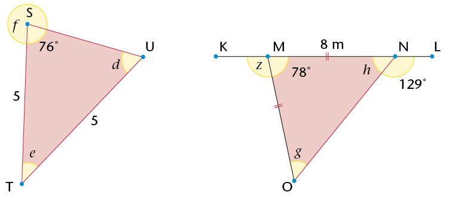
d = 76° (isos. ∆) g = 51° (ext. ∠s ∆)
e = 28° (sum ∠s ∆) h = 51° (isos. ∆ or ∠s on str. line or sum ∠s ∆)
f = 104° (∠s around a point) z = 102° (∠s on str. line or ext. ∠s ∆)
MO = 8 m (MN = MO)
3. Calculate the sizes of y and x.

y = 69° (sum ∠s ∆) x = 30° (sum ∠s ∆)
11.3 Quadrilaterals
properties of quadrilaterals
1. Name the following quadrilaterals. Mark equal angles and equal sides in each figure. Use your ruler and protractor to measure angle sizes and lengths where necessary.
2. Complete the following table:
|
|
|
|
|
|
|
|
|
|
|
At least one pair of opposite angles
is equal.
|
yes
|
yes
|
yes
|
yes
|
yes
|
no
|
|
Both pairs of opposite angles
are equal.
|
|
|
|
|
|
|
|
At least one pair of adjacent angles
is equal.
|
|
|
|
|
|
|
|
All four angles are equal.
|
|
|
|
|
|
|
|
Any two opposite sides are equal.
|
|
|
|
|
|
|
|
Two adjacent sides are equal, and the other two adjacent sides are also equal.
|
|
|
|
|
|
|
|
All four sides are equal.
|
|
|
|
|
|
|
|
At least one pair of opposite sides
is parallel.
|
|
|
|
|
|
|
|
Any two opposite sides are parallel.
|
|
|
|
|
|
|
|
The two diagonals are perpendicular.
|
|
|
|
|
|
|
|
At least one diagonal bisects the
other one.
|
|
|
|
|
|
|
|
The two diagonals bisect each other.
|
|
|
|
|
|
|
|
The two diagonals are equal.
|
|
|
|
|
|
|
|
At least one diagonal bisects a pair
of opposite angles.
|
|
|
|
|
|
|
|
Both diagonals bisect a pair of opposite angles.
|
|
|
|
|
|
|
|
The sum of the interior angles is 360°.
|
|
|
|
|
|
|
3. Look at the properties of a square and a rhombus.
(a) Are all the properties of a square also the properties of a rhombus? Explain.
A square and a rhombus share the property that all four sides are equal.
A square has right angles at the vertices, but a rhombus does not. A rhombus
does not have equal adjacent angles at the vertices. The only property they share
is that the opposite angles are equal.
A square has equal diagonals. A rhombus does not.
(b) Are all the properties of a rhombus also the properties of a square? Explain.
Yes. The properties of a rhombus are shared by a square.
(c) Which statement is true?
A square is a special kind of rhombus.
A rhombus is a special kind of square.
4. Look at the properties of rectangles and squares.
(a) Are all the properties of a square also the properties of a rectangle? Explain.
No. A rectangle does not have equal sides, diagonals that intersect at 90°, or
diagonals that bisect the angles at the vertices.
(b) Are all the properties of a rectangle also the properties of a square? Explain.
Yes. A square has all the properties of a rectangle and additional properties.
(c) Which statement is true?
A square is a special kind of rectangle.
A rectangle is a special kind of square.
5. Look at the properties of parallelograms and rectangles.
(a) Are all the properties of a parallelogram also the properties of a rectangle? Explain.
Yes. A rectangle has all the properties of a parallelogram, and additional properties.
(b) Are all the properties of a rectangle also the properties of a parallelogram? Explain.
No. A parallelogram does not have to have equal diagonals, or vertices of 90°.
(c) Which statement is true?
A rectangle is a special parallelogram.
A parallelogram is a special rectangle.
6. Look at the properties of a rhombus and a parallelogram. Is a rhombus a special kind of parallelogram? Explain.
Yes. A rhombus has all the properties of a parallelogram and additional properties.
7. Compare the properties of a kite and a parallelogram. Why is a kite not a special kind of parallelogram?
A kite does not have the following properties, which are needed for it to be a
parallelogram: opposite sides equal, both pairs of opposite sides parallel and both
diagonals bisect each other.
8. Compare the properties of a trapezium and a parallelogram. Why is a trapezium not a special kind of parallelogram?
A trapezium does not have the following properties, which are needed for it to be
a parallelogram: equal opposite sides, both pairs of opposite sides parallel and the
diagonals don’t bisect each other.
Unknown sides and angles in quadrilaterals
1. Determine the sizes of angles a to e in the quadrilaterals below. Give reasons for
your answers.

a = 90° (vertex of square) d = 45° (opp. ∠s //m)
b = 45° (diags of square) e = 135° (int. ∠s quad = 360°)
c = 145° (int. ∠s quad = 360°)
2. Calculate the perimeters of the
quadrilaterals on the right. Give your
answers to two decimal places.
AD = cm (Pythag); CD = cm (Pythag); Perim. ABCD = 40,29 cm
FI = units; FIHG = 16,32 units

11.4 Congruent triangles
definition and notation of congruent triangles
If two triangles are congruent, then they have exactly the same size and shape. In other words, if you cut out one of the triangles and place it on the other, they will match exactly.
|
|
If you know that two triangles are congruent, then each side in the one triangle will be equal to each corresponding side in the second triangle. Also, each angle in the one triangle will be equal to each corresponding angle in the second triangle.
|

In the triangles above, you can see that ∆ABC ≡ ∆XYZ.
Congruency symbol
≡ means ‘is congruent to’
The order in which you write the letters when stating that
two triangles are congruent is very important. The letters of
the corresponding vertices between the two triangles must appear in the same position
in the notation. For example, the notation for the triangles above should be: ∆ABC ≡ ∆XYZ,
because it indicates that  =
=  ,
,  =
=  ,
,  =
=  , AB = XY, BC = YZ and AC = XZ.
, AB = XY, BC = YZ and AC = XZ.
It is incorrect to write ∆ABC ≡ ∆ZYX. Although the letters refer to the same triangles, this notation indicates that  =
=  ,
,  =
=  , AB = ZY and BC = YX, and these statements are not true.
, AB = ZY and BC = YX, and these statements are not true.
Write down the equal angles and sides according to the following notations:
1. ∆KLM ≡ ∆PQR:
2. ∆FGH ≡ ∆CST:
minimum conditions for congruent triangles
In the previous chapter, you investigated the minimum conditions that must be satisfied in order to establish that two triangles are congruent.
|
|
The conditions for congruency:
- • SSS (all corresponding sides are equal)
- • SAS (two corresponding sides and the angle between the two sides are equal)
- • AAS (two corresponding angles and any corresponding side are equal)
- • RHS (both triangles have a 90° angle and have equal hypotenuses and one other side equal).
|
Decide whether or not the triangles in each pair below are congruent. For each congruent pair, write the notation correctly and give a reason for congruency.
1. 2.
Not necessarily congruent
3. 4.
Not necessarily congruent
5. 6.
proving that triangles are congruent
You can use what you know about the minimum conditions for congruency to prove that two triangles are congruent.
When giving a proof for congruency, remember the following:
|
|
- • Each statement you make needs a reason.
- • You must give three statements to prove any
two triangles congruent.
- • Give the reason for congruency.
|
Example:
In the sketch on the right: AB // EC and AD = DC.
Prove that the triangles are congruent.
Solution:
|
|
|
|
In ∆ABD and ∆CED:
1) AD = DC
2) A B = C B = C E E
3) B D = E D = E D D
∴ ∆ABD ≡ ∆CED
|
Given
Vert. opp. ∠s
Alt. ∠s (AB // EC)
AAS
|
1. Prove that ∆ACE ≡ ∆BDE.
|

|
|
|
|
1) AC = D B B
2) AE = EB
3) CE = ED
∴ ∆ACE ≡ ∆BDE
|
Vert. opp. ∠s
Given
Given
SAS
|
2. Prove that ∆WXZ ≡ ∆YXZ.
|

|
|
|
|
1) WZ = Y Z = 90° Z = 90°
2) XZ is common
3) WZ = ZY
∴ ∆WXZ ≡ ∆YXZ
|
Given
Given
RHS
|
3. Prove that QR = SP. (Hint: First prove that the triangles are congruent.)
|
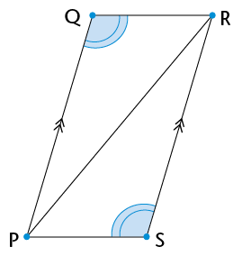
|
|
|
|
1) P R = R R = R P P
2) PR is common
3) Q R = P R = P S S
∴ ∆PQR ≡ ∆RSP
∴ QR = SP
|
Given
Alt. ∠s (QP//RS)
AAS
|
4. Prove that the triangles below are congruent. Then find the size of Q P.
P.
|

|
|
|
|
1) QM = NM
2) MP is common
3) QP = NP
∴ ∆PQM ≡ ∆PNM
∴ Q M = 41° M = 41°
Q P = 180° – (83° + 41°) P = 180° – (83° + 41°)
= 56°
|
Given
Given
SSS
Sum ∠s ∆
|

11.5 Similar triangles
properties of similar triangles
∆BAC and ∆DEF below are similar to each other. Similar figures have the same shape, but their sizes can be different.

1. (a) Use a protractor to measure the angles in each triangle above. Then complete
the table below.
|
|
|
|
|
 = 60° = 60°
|
 = 60° = 60°
|
|
|
 = 40° = 40°
|
 = 40° = 40°
|
|
|
= 80°
|
 = 80° = 80°
|
|
(b) What can you say about the sizes of the angles in similar triangles?
The corresponding angles in each triangle are equal.
2. (a) Use a ruler to measure the lengths of the sides in each triangle in question 1.
Then complete the table below.
|
|
|
|
|
BA = 6 cm
|
DE = 8 cm
|
BA : DE = 6 : 8 = 1 : 1
|
|
BC = 3,9 cm
|
DF = 5,2 cm
|
BC : DF = 3,9 : 5,2 = 1 : 1
|
|
CA = 5,3 cm
|
FE = 7 cm
|
CA : FE = 5,25 : 7 = 1 : 1
|
(b) What can you say about the relationship
between the sides in similar triangles?
Ratio reminder
You read 2 : 1 as ‘two to one’.
The corresponding sides are in proportion. In this
case, ∆DEF’s side lengths are 1,3 times as long as those of ∆BAC.
3. The following notation shows that the triangles are similar: ∆BAC /// ∆DEF. Why do you think we write the first triangle as ∆BAC and not as ∆ABC?
For similar triangles, the order of the letters in the notation indicates which
angles and sides correspond. The equal angles must be in the same position for
both triangles. Writing ‘∆BAC’ and ‘∆DEF’ correctly indicates that = , =
and = .
|
|
The properties of similar triangles:
- • The corresponding angles are equal.
- • The corresponding sides are in proportion.
|
Notation for similar triangles:
|
|
If ∆XYZ is similar to ∆PQR, then we write: ∆XYZ /// ∆PQR.
As for the notation of congruent figures, the order of the letters in the
notation of similar triangles indicates which angles and sides are equal.
For ∆XYZ /// ∆PQR:
Angles:  = =  and = and =  and and  = = 
Sides: XY : PQ = XZ : PR = YZ : QR
If the triangles’ vertices were written in a different order, then the
statements above would not be true.
|
When proving that triangles are similar, you either need to show that the corresponding angles are equal or you must show that the sides are in proportion.
working with properties of similar triangles
1. Decide if the following triangles are similar to each other.
(a) (b)
∆EFG /// ∆LMN (sides in proportion)
(c) (d)
Not similar (sides not in proportion)
2. Do the following task in your exercise book.
- • Use a ruler and protractor to construct the triangles described in (a) to (d) below.
- • Use your knowledge of similarity to draw the second triangle in each question.
- • Indicate the sizes of the corresponding sides and angles on the second triangle.
(a) In ∆EFG,  = 75°, EG = 4 cm and GF = 5 cm.
= 75°, EG = 4 cm and GF = 5 cm.
∆ABC is an enlargement of ∆EFG, with its sides three times longer.
(b) In ∆MNO,  = 45°,
= 45°,  = 30° and MN = 5 cm.
= 30° and MN = 5 cm.
∆PQR is similar to ∆MNO. The sides of ∆MNO to ∆PQR are in proportion 1 : 3.
(c) ∆RST is an isosceles triangle.  = 40°, RS is 10 cm and RS = RT.
= 40°, RS is 10 cm and RS = RT.
∆VWX is similar to ∆RST. The sides of ∆RST to ∆VWX are in proportion 1 :  .
.
(d) ∆KLM is right-angled at  , LM is 7 cm and the hypotenuse is 12 cm.
, LM is 7 cm and the hypotenuse is 12 cm.
∆XYZ is similar to ∆KLM, so that the sides are a third of the length of ∆KLM.
|
investigation: Minimum conditions for similarity
|
|
|
|
Which of the following are minimum conditions
for similar triangles?
(a) Two angles in one triangle are equal to
two angles in another triangle.
(b) Two sides of one triangle are in the
same proportion as two sides in
another triangle.
(c) Two sides of one triangle are in the
same proportion as two sides in another
triangle, and the angle between the two
sides is equal to the angle between the
corresponding sides.
(d) Two sides of one triangle are in the same
proportion as two sides in another triangle,
and one angle not between the two sides
is equal to the corresponding angle in the
other triangle.
No (this only works if the
side opposite the angle given is the longer
|
solving problems with similar triangles
1. Line segment QR is parallel to line segment ST.
Parallel lines never meet. Two lines are parallel to each other if the distance between them is the same along the whole length of the lines.
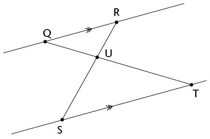
Complete the following proof that ∆QRU /// ∆TSU:
|
|
|
|
RT = Q S S
Q S = S =
 = =
∴ ∆QRU /// ∆TSU
|
Alt. ∠s
Vert. opp. ∠s
Equal ∠s (or AAA)
|
2. The following intersecting line segments form triangle pairs between parallel lines.

(a) Are the triangles in each pair similar? Explain.
Yes. Angles are equal (same proof as in question 1).
(b) Write down pairs of similar triangles.
∆ABE /// ∆DCE; ∆FGJ /// ∆HIJ
(c) Are triangles like these always similar? Explain how you can be sure without
measuring every possible triangle pair.
Yes. If there are parallel lines, the pairs of alternate angles will always be equal.
So, you have similar triangles.
3. The intersecting lines on the
right form triangle pairs between
the line segments that are not
parallel. Are these triangle pairs
similar? Explain why or why not.
They are not similar. The
corresponding angles in each
triangle are not equal and the lines are not in proportion.
4. Consider the triangles below. DE // BC. Prove that ∆ABC /// ∆ADE.
|
|
|
|
|
 is common is common
A C = A C = A E E
A B = A B = A D D
∴ ∆ABC /// ∆ADE
|
Corr. ∠s (DE // BC)
Corr. ∠s (DE // BC) OR Sum ∠s∆
AAA
|
5. In the diagram on the right, ST is a
telephone pole and UV is a vertical stick.
The stick is 1 m high and it casts a shadow
of 1,7 m (VW). The telephone pole casts a
shadow of 5,1 m (TW). Use similar
triangles to calculate the height of the
telephone pole.
In ∆STW and ∆UVW:
1) is common
2) SW = UW = 90° (context of problem)
3) TW = VW (sum ∠s ∆)
∴ ∆STW /// ∆UVW (AAA)
∴ proportion = 5,1 : 1.7 = 1 : 3
∴ ST = 3 × UV = 3 × 1 = 3 m
6. How many similar triangles are there in the diagram below? Explain your answer.
In ∆ABC and ∆ADB:
1) is shared 2) AB is common
3) = = 90° (given) ∴ ∆ABC /// ∆ADB
In ∆ABC /// ∆BDC:
1) is shared 2) BC is common
3) = = 90° (given) ∴ ∆ABC /// ∆BDC
∴ ∆ABC /// ∆ADB /// ∆BDC (AAA).

11.6 Extension questions
1. ∆ABC on the right is equilateral. D is the
midpoint of AB, E is the midpoint of BC
and F is the midpoint of AC.
(a) Prove that ∆BDE is an equilateral triangle.
= 60° (ABC is equilateral, given)
BA = BC (ABC is equilateral, given)
∴ BD = BE (D and E are midpoints)
BE = BD (isos. Δ)
∴ BE = BD = 60° (sum ∠s ∆)
∴ ∆BDE is equilateral
(b) Find all the congruent triangles. Give a proof for each.
In ∆BDE and ∆ADF:
1) DE = FD = 60° (∆ABC is equilateral)
2) BD = AD (D is midpoint, given)
3) BE = AF (E is midpoint of BC; F is midpoint of AC; ∆ABC equilateral ∴ BC = AC)
∴ ∆BDE ≡ ∆ADF (SAS)
Similarly ∆BDE ≡ ∆CFE. Hence ∆ADF ≡ ∆CFE.
DE = EF = AF (∆BDE is equilateral, proved in 1(a))
∴ ∆BDE ≡ ∆DEF
∴ ∆BDE ≡ ∆DEF ≡ ∆ADF ≡ ∆CFE
(c) Name as many similar triangles as you can. Explain how you know they are
similar.
∆ABC /// ∆BDE /// ∆DEF /// ∆ADF /// ∆CFE (They are all equilateral.)
(d) What is the proportion of the corresponding sides of the similar triangles?
For ∆ABC /// ∆BDE, the sides are in the proportion 2 : 1.
(e) Prove that DE is parallel to AC.
BC = 60° (∆ABC is equilateral)
BE = 60° (∆BDE is equilateral)
DE = FC (BC = BE, Corr. ∠)
(f) Is DF parallel to BC? Is EF parallel to BA? Explain.
Yes. Similar reason as 1(d).
2. Consider the similar triangles drawn below using concentric circles. Explain why the triangles are similar in each diagram.
(a) (b)
(a) The radii are equal, therefore FJ = FL, FI = FK and FG = FH. Therefore the sides
of each triangle are in proportion. is shared in all three triangles. Therefore
the triangles are similar (SAS).
(b) Each triangle shares angle . Each triangle has a 90° angle. Therefore, they
are similar (AAA).

In Grade 8 you identified relationships between angles on straight lines. In this chapter,
you will revise all of the angle relationships and write clear descriptions of them.
12.1 Angle relationships 221
12.2 Identify and name angles 230
12.3 Solving problems 232


12 Geometry of straight lines
12.1 Angle relationships
Remember that 360° is one full revolution.
If you look at something and then turn all the way around so that you are looking at it again, you have turned through an angle of 360°. If you turn only halfway around, so that you look at something that was right behind your back, you have turned through
an angle of 180°.
1. Answer the questions about the figure below.

(a) Is angle FOD in the figure smaller or bigger than a right angle?
smaller
(b) Is angle FOE in the above figure smaller or bigger than a right angle?
bigger
On the figure above, F D + F
D + F E = half of a revolution = 180°.
E = half of a revolution = 180°.
|
|
The sum of the angles on a straight line is 180°.
When the sum of angles is 180°, the angles are called supplementary.
|
2. C A in the figure below is 75°.
A in the figure below is 75°.
AMB is a straight line.

(a) How big is C B?
B?
(b) Why do you say so?
3. P B in the figure in question 2 is 40°.
B in the figure in question 2 is 40°.
How big is C P?
P?
Explain your reasoning.
4. In the figure below, AMB is a straight line and A C and B
C and B C are equal angles.
C are equal angles.
(a) How big are these angles?
(b) How do you know this?
f
they are equal, each angle must be 90°.
(90° + 90° = 180°)
|
|
When one line forms two equal angles where it meets another line, the two lines are said to be perpendicular.
Because the two equal angles are angles on a straight line, their sum is 180°, hence each angle
is 90°.
|
5. In the figure below, lines AB and CD intersect at point M.

(a) Does it look as if C A and B
A and B D are equal?
D are equal?
In this chapter, you are
required to give good
reasons for every statement you make.
In this chapter, you are
required to give good
reasons for every statement you make.
(b) Can you explain why they are equal?
Yes, by using the angle definition of a straight line.
C
If C.
(c) What does C A + D
A + D A equal?
A equal?
Why do you say so?
They are angles on straight line CD.
(d) What is C A + C
A + C B?
B?
Why do you say so?
They are angles on straight line AB.
(e) Is it true that C A + D
A + D A = C
A = C A + C
A + C B?
B?
(f) Which angle occurs on both sides of the equation in (e)?
6. Look carefully at your answers to questions 5(c) to 5(e).
Now try to explain your observation in question 5(a).
Each side of the equal equation has one angle that is the same size, so the other two
angles have to be equal to each other.
7. In the figure below, AB and CD intersect in M. Four angles are formed. Angle CMB and angle AMD are called vertically opposite angles. Angle CMA and angle BMD are also vertically opposite.
|
|
When two straight lines intersect, the vertically opposite angles are equal.
|
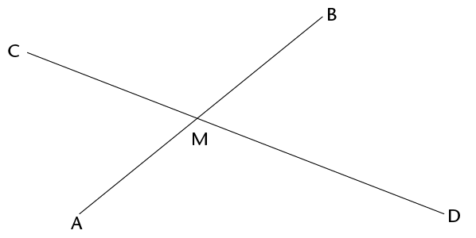
(a) If angle BMC = 125°, how big is angle AMD?
(b) Why do say so?
lines and angles
|
|
A line that intersects other lines is called a transversal.
|

In the above pattern, AB is parallel to CD and EF // GH // KB // LD.
1. Angles a, b, c, d, and e are corresponding angles. Do the corresponding angles look appear to be equal?
No, some of the angles look bigger or smaller than others.
2. Investigate whether the corresponding angles are equal by using tracing paper. Trace the angle you want to compare to other angles and place it on top of the other angle to find out if they are equal. What do you notice?
Only d = e
3. Angles f, h, j, m and n are also corresponding angles. Identify all the other groups of corresponding angles in the pattern.
(g, i k); (o, r y, v); (u, s, q, p)
4. Describe the position of corresponding angles that are formed when a transversal intersects other lines.
Angles on the same side of the transversal and either all left of the other lines or on
the right-hand side of the other lines.
5. The following are pairs of alternate angles: g and o; j and s; and k and r.
Do these angles appear to be equal?
Yes
6. Investigate whether the alternate angles are equal by using tracing paper. Trace the angle you want to compare and place it on top of the other angle to find out if they are equal. What do you notice?
Yes, they are equal and they are angles on lines AB and CD which are parallel to
each other.
7. Identify two more pairs of alternate angles.
m and u; h and q; f and p
8. Clearly describe the relative position of alternate angles that are formed when a transversal intersects other lines.
They are on alternate sides of the transversal and between parallel lines.
9. Did you notice something about some of the pairs of corresponding angles when
you did the investigation in question 6? Describe your finding.
Corresponding angles are also equal when AB is parallel to CD.
10. Angles f and o; i and q and k and s are all pairs of co-interior angles. Identify three more pairs of co-interior angles in the pattern.
g and p; j and r; m and t; v and h
|
|
The angles in the same relative position at each intersection where a straight line crosses two others are called corresponding angles.
Angles on different sides of a transversal and
between two other lines are called alternate angles.
Angles on the same side of the transversal and
between two other lines are called co-interior angles.
|
angles formed by parallel lines
Corresponding angles
The lines AB and CD below never meet. Lines that never meet and are at a fixed distance from one another are called parallel lines. We write AB // CD.
|
|
Parallel lines have the same direction, i.e. they form equal corresponding angles with any line that intersects them.
|

The line EF cuts AB at G and CD at H.
EF is a transversal that cuts parallel lines AB and CD.
1. (a) Look carefully at the angles EGA and EHC in the above figure. They are called corresponding angles. Do they appear to be equal?
Yes
(b) Measure the two angles to check whether they are equal. What do you notice?
They are equal.
2. Suppose E A and E
A and E C are really equal. Would E
C are really equal. Would E B and E
B and E D then also be equal?
D then also be equal?
Give reasons to support your answer.
Yes. They are corresponding angles and equal because AB // CD.
|
|
When two parallel lines are cut by a transversal, the corresponding angles are equal.
|
Alternate angles
The angles B F and C
F and C E below are called alternate angles. They are on opposite sides of the transversal.
E below are called alternate angles. They are on opposite sides of the transversal.

3. Do you think angles AGF and DHE should also be called alternate angles?
Yes, they are on different sides of transversal EF and between lines AB and CD.
4. Do you think alternate angles are equal? Investigate by using the tracing paper like you did previously, or measure the angles accurately with your protractor.
What do you notice?
They are equal if AB // CD.
|
|
When parallel lines are cut by a transversal, the alternate angles are equal.
|
5. Try to explain why alternate angles are equal when the lines that are cut by a transversal are parallel, keeping in mind that corresponding angles are equal.
An alternate angle is vertically opposite to a corresponding angle.
Vertically opposite angles are equal.
By answering the following questions, you should be able to see how you can explain why alternate angles are equal when parallel lines are cut by a transversal.
6. Are angles B H and D
H and D F in the figure corresponding angles?
F in the figure corresponding angles?
What do you know about corresponding angles?
They are in the same positions if lines are crossed by a transversal and they are equal
if the lines are parallel.

7. (a) What can you say about B H + A
H + A H? Give a reason.
H? Give a reason.
They are supplementary (their sum is 180°) angles, because AB is a straight line.
(b) What can you say about D G + C
G + C G? Give a reason.
G? Give a reason.
They are supplementary (their sum is 180°) angles, because AB is a straight line.
(c) Is it true that B H + A
H + A H = D
H = D G + C
G + C G? Explain.
G? Explain.
Yes, because the sums on either side of the equal sign are both equal to 180°.
(d) Will the equation in (c) still be true if you replace angle B H on the left-hand side with angle C
H on the left-hand side with angle C G?
G?
8. Look carefully at your work in question 7 and write an explanation why alternate angles are equal, when two parallel lines are cut by a transversal.
Corresponding angles are equal if parallel lines are intersected by a transversal.
Alternate angles will also be equal, because their vertically opposite angles are equal.
Co-interior angles
The angles A H and C
H and C G in the figure below are
G in the figure below are
called co-interior angles.
“co-” means together.
“co-interior” means on the same side.
They are on the same side
of the transversal.

9. (a) What do you know about C G + D
G + D G? Explain.
G? Explain.
They are supplementary (their sum = 180°) because CD is a straight line.
(b) What do you know about B H + A
H + A H? Explain.
H? Explain.
They are supplementary (their sum = 180°) because AB is a straight line.
(c) What do you know about B H + C
H + C G? Explain.
G? Explain.
They are alternate angles and equal, because AB // CD.
(d) What conclusion can you draw about A H + C
H + C G?
G?
Give detailed reasons for your conclusion.
They are also supplementary (their sum = 180°). This is because we have already
shown that:
(alternate angles AB // CD)
H (angles on a straight line) .
|
|
When two parallel lines are cut by a transversal, the sum of two co-interior angles is 180°.
Another way of saying this is to say that the two
co-interior angles are supplementary.
|
12.2 Identify and name angles
1. In the figure below, the line RF is perpendicular to AB.

(a) Is RF also perpendicular to CD? Justify your answer.
Yes, because the corresponding and alternate angles will also be 90°, because
AB // CD.
(b) Name four pairs of supplementary angles in the figure. In each case say how you know that the angles are supplementary.
(c) Name four pairs of co-interior angles in the figure.
(d) Name four pairs of corresponding angles in the figure.
(e) Name four pairs of alternate angles in the figure.
2. Now you are given that AB and CD in the figure below are parallel.
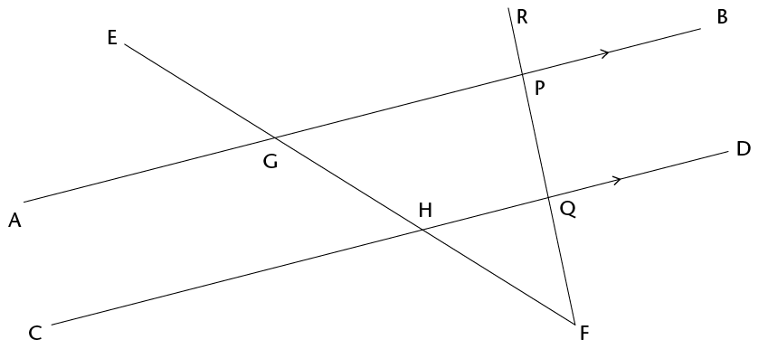
(a) If it is also given that RF is perpendicular to AB, will RF also be perpendicular to
CD? Justify your answer.
Yes, RF will be perpendicular to CD because are
corresponding angles and thus Hwill also be 90°.
(b) Name all pairs of supplementary angles in the figure. In each case say how you
know that the angles are supplementary.
Because it is stated that AB // CD, the co-interior angles will also be
supplementary:
A
Other angles that are supplementary are adjacent angles on a straight line:
Con line RF; etc.
(c) Suppose E A = x. Give the size of as many angles in the figure as you can, in
A = x. Give the size of as many angles in the figure as you can, in
terms of x. Each time give a reason for your answer.
G= x (vertically opposite
∠s); supplementary adjacent ∠s
or ∠s on straight line) = 1800° − x (vertically opposite ∠s);
80° − x
(vertically opposite ∠s)0°; sum of ∠s of ∆).
(Other valid reasons may be given in various places, such as alternate angles
that are equal etc.)
12.3 Solving problems
1. Line segments AB and CD in the figure below
are parallel. EF and IJ are also parallel. Mark
these facts on the figure, and then answer the
questions.
When you solve problems in geometry you can use a shorthand way to write your reasons. For example, if two angles are equal because they are corresponding angles, then you can write (corr ∠s, AB // CD) as the reason.

(a) Name five angles in the figure that are equal to G D. Give a reason for each of your answers.
D. Give a reason for each of your answers.
(b) Name all the angles in the figure that are equal to A H. Give a reason for each of your answers.
H. Give a reason for each of your answers.
2. AB and CD in the figure below are parallel. EF and IJ are also parallel. N B = 80° and
B = 80° and
J F = 40°.
F = 40°.
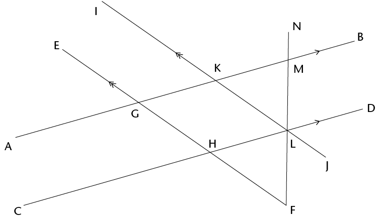
Find the sizes of as many angles in the figure as you can, giving reasons.
Learners should be able to find all 23 of the angles from the information given:
3. In the figure below, AB // CD; EF // AB; JR // GH. You are also given that P N = 60°,
N = 60°,
R D = 50°.
D = 50°.

(a) Find the sizes of as many angles in the figure as you can, giving reasons.
(b) Are EF and CD parallel? Give reasons for your answers.
In this chapter, you will revise what you have learnt about the Theorem of Pythagoras
in Grade 8. You will investigate how the theorem is proved, what it means, and how
to apply it in order to work out unknown lengths in right-angled triangles and other
geometric figures.
13.1 Investigating the sides of a right-angled triangle 237
13.2 Checking for right-angled triangles 239
13.3 Finding missing sides 241
13.4 More practice using Pythagoras’ Theorem 246

13 Pythagoras’ Theorem
13.1 Investigating the sides of a right-angled triangle
A theorem is a rule or a statement that has been
proved through reasoning. Pythagoras’ Theorem is
a rule that applies only to right-angled
triangles. The theorem is named after the Greek mathematician, Pythagoras.
A right-angled triangle has one 90° angle. The
longest side of the right-angled triangle is called
the hypotenuse.

|
|
The hypotenuse is the side opposite the 90° angle in a right-angled triangle. It is always the longest side.
|
investigating squares on the sides of right-angled triangles
How to say it:
‘high - pot - eh - news’
1. The figure shows a right-angled triangle with
squares on each of the sides.
(a) Write down the areas of the following:
Square A:
Square B:
Square C:
(b) Add Area of square B + Area of square C:
(c) What do you notice about the areas?
2. The figure below is similar to the one in question 1. The lengths of the sides of the right-angled triangle are 5 cm and 12 cm.
(a) What is the length of the hypotenuse? Count the squares.
(b) Use the squares to find the following:
Area of A:
Area of B:
Area of C:
Area of B + Area of C:
(c) What do you notice about the areas? Is it similar to your answer in 1(c)?
3. A right-angled triangle has side lengths of 8 cm
and 15 cm. Use your findings in the previous
questions to answer the following questions:
(a) What is the area of the square drawn
along the hypotenuse?
(b) What is the length of the triangle’s hypotenuse?
In the previous activity, you should have discovered Pythagoras’ Theorem for right-angled triangles.
|
|
Pythagoras’ Theorem says:
In a right-angled triangle, a square formed on the hypotenuse will have the same area as the sum of the area of the two squares formed on the other sides of the triangle. Therefore:
(Hypotenuse)2 = (Side 1)2 + (Side 2)2
|

13.2 Checking for right-angled triangles
Pythagoras’ Theorem applies in two ways:
- • If a triangle is right-angled, the sides will have the following relationship: (Hypotenuse)2 = (Side 1)2 + (Side 2)2
- • If the sides have the relationship: (Longest side)2 = (Side 1)2 + (Side 2)2, then the triangle is a right-angled triangle.
So we can test if any triangle is right-angled without using a protractor.
Example:
Is a triangle with sides 12 cm, 16 cm and 20 cm right-angled?

(Longest side)2 = 202 = 400 cm2
(Side 1)2 + (Side 2)2 = 122 + 162 = 144 + 256 = 400 cm2
(Longest side)2 = (Side 1)2 + (Side 2)2
∴ The triangle is right-angled.
are these right-angled triangles?
1. This triangle’s side lengths are 29 mm,
20 mm and 21 mm. Prove that it is a
right-angled triangle.
2. Use Pythagoras’ Theorem to determine whether these triangles are right-angled. All values are in the same units.
(a) (b) (c)

3. Determine whether the following side lengths would form right-angled triangles.
All values are in the same units.
(a) 7, 9 and 12 (b) 7, 12 and 14 (c) 16, 8 and 10
(d) 6, 8 and 10 (e) 8, 15 and 17 (f) 16, 21 and 25
13.3 Finding missing sides
You can use the Theorem of Pythagoras to find the lengths of missing sides if you know that a triangle is right-angled.
finding the missing hypotenuse
Example:
Calculate the length of the hypotenuse if the lengths of the other two sides are 6 units and 8 units.
∆ABC is right-angled, so:
AC2 = AB2 + BC2
= 62 + 82 units2
= 36 + 64 units2
= 100 units2
AC =  units
units
= 10 units
Sometimes the square root of a number is not a
whole number or a simple fraction. In these cases,
you can leave the answer under the square root
sign. This form of the number is called a surd.
Surd form
You pronounce surd so that it rhymes with word.
is an example of a number in surd form.
 is not a surd because you can simplify it:
is not a surd because you can simplify it:
= 3
Example:
Calculate the length of the hypotenuse of
∆ABC if  = 90°, AB = 2 units and BC = 5 units.
= 90°, AB = 2 units and BC = 5 units.
Leave your answer in surd form, where applicable.
Remember when taking the square root that
length is always positive.
AC2 = AB2 + BC2
= 22 + 52 units2
= 4 + 25 units2
= 29 units2
AC =  units
units
1. Find the length of the hypotenuse in each of the triangles below. Leave the answers in surd form where applicable.
(a) (b)

(c) (d)
2. A rectangle has sides with lengths 36 mm and 77 mm.
Find the length of the rectangle’s diagonal.
3. ∆ABC has = 90°, AB = 3 cm and AC = 5 cm.
Make a rough sketch of the triangle, and then
calculate the length of BC.
4. A rectangular prism is made of glass. It has a length of 16 cm, a height of 10 cm and a breadth of 8 cm. ABCD and EFGH are two of its faces. ∆ACH has been drawn inside the prism. Is ∆ACH right-angled? Answer the questions to find out.

(a) Calculate the length of the sides of ∆ACH. Note that all three sides of the
triangles are diagonals of rectangles. AC is in rectangle ABCD, AH is in ADHE
and HC is in HDCG.
(b) Is ∆ACH right-angled? Explain your answer.
finding any missing side in a right-angled triangle
Example:
Find the length of TS in the triangle below.
US2 = TU2 + TS2
102 = 82 + TS2
100 = 64 + TS2
36 = TS2
= TS
∴ TS = 6 cm
1. In the right-angled triangles below, calculate the length of the sides that have not been given. Leave your answers in surd form where applicable.
(a) (b) (c)

2. Calculate the length of the third side of each of the following right-angled triangles. First draw a rough sketch of each of the triangles before you do any calculations. Round off your answers to two decimal places.
(a) ∆ABC has AB = 12 cm, BC = 18 cm and  = 90°. Calculate AC.
= 90°. Calculate AC.
(b) ∆DEF has  = 90°, DE = 58 cm and DF = 41 cm. Calculate EF.
= 90°, DE = 58 cm and DF = 41 cm. Calculate EF.
(c) ∆JKL has  = 90°, JK = 119 m, KL = 167 m. Calculate JL.
= 90°, JK = 119 m, KL = 167 m. Calculate JL.
(d) ∆PQR has PQ = 2 cm, QR = 8 cm and  = 90°. Calculate PR.
= 90°. Calculate PR.
3. (a) A ladder of length 5 m is placed at an angle against a wall. The
bottom of the ladder is 1 m away from the wall. How far up the
wall will the ladder reach? Round off to two decimal places.
(b) If the ladder reaches a height of 4,5 m against the wall, how far away from
the wall was it placed? Round off to two decimal places.

|
PYTHAGOREAN TRIPLES
|
|
|
|
Sets of whole numbers that can be used as the sides of a right-angled triangle are known as Pythagorean triples, for example:
3-4-5 5-12-13 7-24-25 16-30-34 20-21-29
You extend these triples by finding multiples of them. For examples, triples from the 3-4-5 set include the following:
3-4-5 6-8-10 9-12-15 12-16-20
There are many old writings that record Pythagorean triples. For example, from 1900 to 1600 BC the Babylonians had already calculated very large Pythagorean triples, such as:
1 679-2 400-2 929.
How many Pythagorean triples can you find? What is the largest one you can find that is not a multiple of another one?
|
13.4 More practice using Pythagoras’ Theorem
1. Four lines have been drawn on the grid below. Each square is 1 unit long. Calculate the lengths of the lines: AB, CD, EF and GH. Do the calculations in your exercise book and write the answers below. Leave your answers in surd form.

2. (a) Calculate the area of rectangle KLMN.
(b) Calculate the perimeter of ∆KLM.
3. ABCD is a rectangle with AB = 4 cm, BC = 7 cm and CQ = 1,5 cm. Round off your answers to two decimal places if the answers are not whole numbers.

(a) What is the length of QD?
(b) If CP = 4,2 cm, calculate the length of PQ.
(c) Calculate the length of AQ and the area of ∆AQD.
4. MNST is a parallelogram. NR = 9 mm
and MR = 12 mm.
(a) Calculate the area of ∆MNR.
(b) Calculate the perimeter of MNST.

|
Pythagoras’ theorem and other types of triangles
|
|
|
|
Pythagoras’ Theorem works only for right-angled triangles. But we can also use it to find out whether other triangles are acute or obtuse, as follows.
- • If the square of the longest side is less than the sum of the squares of the two shorter sides, the biggest angle is acute.
For example, in a 6-8-9 triangle: 62 + 82 = 100 and 92 = 81.
81 is less than 100 ∴ the 6-8-9 triangle is acute.
- • If the square of the longest side is more than the sum of the squares of the two shorter sides, the biggest angle is obtuse.
For example, in a 6-8-11 triangle: 62 + 82 = 100 and 112 = 121.
121 is more than 100 ∴ the 6-8-11 triangle is obtuse.
Complete the following table. It is based on the triangle on the right.
Decide whether each triangle described is right-angled, acute or obtuse.
|
|
|
|
|
|
|
|
|
3
|
5
|
6
|
32 + 52 = 9 + 25 = 34
|
62 = 36
|
a2 + b2 < c2
|
Acute
|
|
2
|
4
|
6
|
|
|
a2 + b2
c2
|
|
|
5
|
7
|
9
|
|
|
a2 + b2
c2
|
|
|
12
|
5
|
13
|
|
|
a2 + b2
c2
|
|
|
12
|
16
|
20
|
122 + 162 = 144 + 256 = 400
|
202 = 400
|
a2 + b2 = c2
|
Right-angled
|
|
7
|
9
|
11
|
|
|
a2 + b2
c2
|
|
|
8
|
12
|
13
|
|
|
a2 + b2
c2
|
|
|
1. Write down Pythagoras’ Theorem in the way that you best understand it.
2. Calculate the lengths of the missing sides in the following triangles. Leave the
answers in surd form if necessary.
(a) (b)
3. ABCD is a parallelogram.
(a) Calculate the perimeter of ABCD.
(b) Calculate the area of ABCD.
Pythagoras (569–475 BC)
Pythagoras was an influential mathematician. Like many Greek mathematicians of 2 500 years ago, he was also a philosopher and a scientist. He formulated the best-known theorem, today known as Pythagoras’ Theorem.
However, the theorem had already been in use 1 000 years earlier, by the Chinese and the Babylonians.
In this chapter, you will revise how to calculate the perimeter and area of squares,
rectangles, triangles and circles. The perimeter of a shape is the distance all the way
around the sides of the shape. The area of a shape is the flat space inside the shape. You will also learn how to calculate the areas of parallelograms, rhombi, kites and
trapeziums, as well as investigate the effect on the perimeter and area of a shape when its dimensions are doubled.
14.1 Area and perimeter of squares and rectangles 251
14.2 Area and perimeter of composite figures 253
14.3 Area and perimeter of circles 255
14.4 Converting between units 257
14.5 Area of other quadrilaterals 258
14.6 Doubling dimensions of a 2D shape 264

14 Area and perimeter of 2D shapes
14.1 Area and perimeter of squares and rectangles
revising concepts
1. Each block in figures A to F below measures
1 cm × 1 cm. What is the perimeter and area
of each of the figures?
Complete the table below.
The perimeter (P) of a shape is the distance along the sides of the shape. The area (A) of a figure is the size of the flat surface enclosed by the figure.

|
Figure
|
Perimeter
|
Area
|
Number of 1 cm × 1 cm squares
|
|
A
|
12 cm
|
8 cm2
|
8
|
|
B
|
10 cm
|
4 cm2
|
4
|
|
C
|
10 cm
|
6 cm2
|
6
|
|
D
|
20 cm
|
5 cm2
|
5
|
|
E
|
10 cm
|
4 cm2
|
4
|
|
F
|
10 cm
|
4 cm2
|
4
|
|
G
|
16 cm
|
12 cm2
|
12
|
|
H
|
8 cm
|
4 cm2
|
4
|
2. Consider the rectangle below. It is formed by
tessellating identical squares that are 1 cm by
1 cm each. The white part has squares that are
hidden.
To tessellate means to cover a surface with identical shapes in such a way that there are no gaps or overlaps. Another word for
tessellating is tiling.
(a) Write down, without counting, the total
number of squares that form this rectangle,
including those that are hidden.
Explain your reasoning.
20. There are 4 rows of 5 squares each, so that’s
4 × 5 = 20 squares. (6 squares are hidden!)
(b) What is the area of the rectangle, including the
white part?
20 cm2
|
|
Area of a rectangle = length × breadth
= l × b
Area of a square = l × l
= l2
|
Both length (l) and breadth (b) are expressed in the
same unit.
3. Sipho and Theunis each paint a wall to earn some money during the school holidays. Sipho paints a wall 4 m high and 10 m long. Theunis’s wall is 5 m high and 8 m long. Who should be paid more? Explain.
Sipho’s area: l × b = 4 m × 10 m Theunis’s area: l × b = 5 m × 8 m
= 4
They should be paid the same.
4. What is the area of a square with a length of 12 mm?
Ar× l
= 2 mm × 12
5. The area of a rectangle is 72 cm2 and its length is 8 cm. What is its breadth?
Area = length × breadth
72 × breadth
Breadth = cm = 9 cm
14.2 Area and perimeter of composite figures
breaking up figures and putting them back together again
1. The diagram on the left below shows the floor plan of a room.
(a) We can calculate the area of the room by dividing the floor into two rectangles, as shown in the diagram on the right below.

Area of the room = Area of yellow rectangle + Area of red rectangle
= (l × b) + (l × b)
= (14 × 9) + (15 × 8)
= 126 + 120
= 246 m2
(b) The yellow part of the room has a wooden floor and the red part is carpeted. What is the area of the wooden floor? What is the area of the carpet?
From question (a): Wooden floor area = 126 m Carpet area = 120
(c) Calculate the area of the room using two different shapes. Draw a sketch.

Area of the room = Area of top rectangle + Area of bottom rectangle
= (l × b) + (l × b)
= (8 × 6) + (22 × 9)
= 48 + 198
= 246 m
2. Calculate the area of the figures below.

Area of figure A: 1 × 4 + (3 −1) × 1
Area of figure B: 0,5 × 5 + 3,5 × 3
3. Which of the following rules can be used to calculate the perimeter (P) of a rectangle? Explain.
- • Perimeter = 2 × (l + b)
- • Perimeter = l + b + l + b
- • Perimeter = 2l + 2b
- • Perimeter = l + b
l and b refer to the length and the breadth of a rectangle.
The first three are equivalent expressions and correct, while the last one is not correct
as it calculates only half of the perimeter.
|
|
The following are equivalent expressions for perimeter:
P = 2l + 2b and P = 2(l + b) and P = l + b + l + b
|
4. Check with two classmates that the 5. The perimeter of a rectangle is 28 cm
rule or rules you have chosen above and its breadth is 6 cm. What is its correct; then apply it to calculate the length?
perimeter of figure A. Think carefully!
P = 2(1 + 4) + 2(2 + 1) − 2(1) *
[*The two rectangles share a 1 cm side,
which does not form part of the
14.3 Area and perimeter of circles
revising concepts from previous grades
The perimeter of a circle is called the circumference
of a circle. You will remember the following about
circles from previous grades:
- • The distance across the circle through its centre is
called the diameter (d) of the circle.
- • The distance from the centre of the circle to any
point on the circumference is called the radius (r).
- • The circumference (c) of a circle divided by its
diameter is equal to the irrational value we call
pi (π). To simplify calculations, we often use the
approximate values:
π ≈ 3,14 or .
|
|
The following are important formulae to remember:
- • d = 2r and r =
 d d
- • Circumference of a circle (c) = 2πr
- • Area of a circle (A) = πr 2
|
circle calculations
In the following calculations, use π = 3,14 and round off your answers to two decimal places. If you take a square root, remember that length is always positive.
1. Calculate the perimeter and area of the following circles:
(a) A circle with a radius of 5 m (b) A circle with a diameter of 18 mm
= 2(3,14)9 [r = ½d = 9 mm]
2. Calculate the radius of a circle with:
(a) a circumference of 53 cm (b) a circumference of 206 mm
3. Work out the area of the following shapes:

= 0,5(3,14)(21, [r = ½d = 21,5]
4. Calculate the radius and diameter of a circle with:
(a) an area of 200 m2 (b) an area of 1 000 m2
r ≈ 7,98 m [length is always positive]
5. Calculate the area of the shaded part.
Area of larger circle: Area of smaller circle:
A = π
= 3,14 × 144 = 3,14 × 49
= 452,16
Area of shaded part: 452,16 − 153,86 = 298,3 cm
14.4 Converting between units
converting between units used for perimeter and area
Always make sure that you use the correct units
in your calculations. Practise the conversions
below.
Remember:
1 cm = 10 mm 1 mm = 0,1 cm
1 m = 100 cm 1 cm = 0,01 m
1 km = 1 000 m 1 m = 0,001 km
1. Convert the following:
(a) 34 cm =
mm (b) 501 m =
km
(c) 226 m =
cm (d) 0,58 km =
m
(e) 1,9 cm =
mm (f) 73 mm =
cm
(g) 924 mm =
m (h) 32,23 km =
m
Remember, to convert between square units, you can use method shown below:
To convert cm2 to m2:
Convert 50 cm2 to m2
1 cm2 = 1 cm × 1 cm 1 cm2 = 0,0001 m2
= 0,01 m × 0,01 m ∴ 50 cm2 = 50 × 0,0001 m2
= 0,0001 m2 = 0,005 m2
2. Convert to cm2:
(a) 650 mm2 (b) 1 200 mm2
(c) 18 m2 (d) 0,045 m2
(e) 93 mm2 (f) 177 m2
3. (a) Convert 93 mm2 to m2. (b) Convert 0,017 km2 to m2.
14.5 Area of other quadrilaterals
parallelograms
As shown below, a parallelogram can be made into a rectangle if a right-angled triangle from one side is cut off and moved to its other side.

So we can find the area of a parallelogram using the formula for the area of a rectangle:
Area of rectangle = l × b
= (base of parallelogram) × (perpendicular height of parallelogram)
Area of parallelogram = Area of rectangle
|
|
∴ Area of parallelogram = base × perp. height
|
We can use any side of
the parallelogram as the base, but we must use the perpendicular height on the side we have chosen.
1. (a) Copy the parallelogram above into your
exercise book.
(b) Using the shorter side as the base of the
parallelogram, follow the steps above to derive
the formula for the area of a parallelogram.
2. Work out the area of the following parallelograms using the formula.

Area of parallelogram = base × perpendicular height
3. Work out the area of the parallelograms. Use the Theorem of Pythagoras to calculate the unknown sides you need. Remember to use the pre-rounded value for height and then round the final answer to two decimal places where necessary.

height = cm (keep this value in

rhombi
A rhombus is a parallelogram with all sides equal.
In the same way we derived the formula for the area of a
parallelogram, we can show the following:
|
|
Area of a rhombus = length × perp. height
|
1. Work in your exercise book. Show how to derive the formula for the area of a rhombus.
2. Calculate the areas of the following rhombi. Round off answers to two decimal places where necessary.

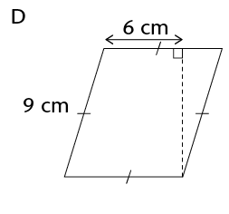

Area = 7 × height = 7 × 8,49
kites
To calculate the area of a kite, you use one of its properties,
namely that the diagonals of a kite are perpendicular.
Area of kite DEFG = Area of ∆DEG + Area of ∆EFG
=  (b × h) + (b × h)
(b × h) + (b × h)
=  (EG × OD) +
(EG × OD) +  (EG × OF)
(EG × OF)
=  EG(OD + OF)
EG(OD + OF)
=  EG × DF
EG × DF
Notice that EG and DF are the diagonals of the kite.
|
|
∴ Area of a kite =  (diagonal 1 × diagonal 2) (diagonal 1 × diagonal 2)
|
1. Calculate the area of kites with the following diagonals. Give your answers in m2.
(a) 150 mm and 200 mm (b) 25 cm and 40 cm
Area = ½(diagonal 1 × diagonal 2)
Area = ½(diagonal 1 × diagonal 2)
2. Calculate the area of the kite.
10 [Pythagoras]
OA= 100 − 36
OA = 64
OA = 8 cm
Area of kite = ½(diagona)
= ½ ((6 + 6) × (15 + 8))
= ½(12 × 23)
= 138 cm
trapeziums
A trapezium has two parallel sides. If we tessellate (tile) two trapeziums as shown in the diagram below, we form a parallelogram. (The yellow trapezium is the same size as the blue one. The base of the parallelogram is equal to the sum of the parallel sides of the trapezium.)

We can use the formula for the area of a parallelogram to work out the formula for the area of a trapezium as follows:
Area of parallelogram = base × height
= (side 1 + side 2) × height
Area of trapezium =  area of parallelogram
area of parallelogram
=  (side 1 + side 2) × height
(side 1 + side 2) × height
|
|
∴ Area of a trapezium =  (sum of parallel sides) × perp. height (sum of parallel sides) × perp. height
|
Calculate the area of the following trapeziums:
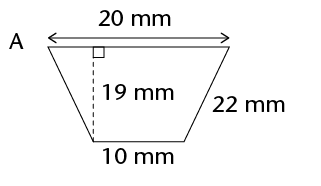
Area = ½(sum of parallel sides) × height
Area = ½(sum of parallel sides) × height
areas of composite shapes
Calculate the areas of the following 2D shapes. Round off your answers to two decimal places where necessary.
Total area = ½(12 + 10) × h + l × h
Total area = l × h + ½(b × h)
Area = 18 × 8 + ½(18 +9)HO
14.6 Doubling dimensions of a 2D shape
Remember that a 2D shape has two dimensions, namely length and breadth. You have used lengths and breadths in different forms, to work out the perimeters and areas of shapes, for example:
- • length and breadth for rectangles and squares
- • bases and perpendicular heights for triangles, rhombi and parallelograms
- • two diagonals for kites.
But how does doubling one or both of the dimensions of
a figure affect the figure’s perimeter and area?
Doubling means to
multiply by 2.
The four sets of figures on the next page are drawn on a grid of squares. Each row shows an original figure, the figure with one of its dimensions doubled, and the figure with both of its dimensions doubled. Each square has a side of 1 unit.
1. Work out the perimeter and area of each shape. Round off your answers to two decimal places where necessary.
2. Which figure in each set is congruent to the original figure?
None; column 3 is similar.
3. Fill in the perimeter (P) and area (A) of each figure in the table below.
|
|
|
|
|
A
|
P =
A =
|
P =
A =
|
|
B
|
P =
A =
|
P =
A =
|
|
C
|
P =
A =
|
P =
A =
|
|
D
|
P =
A =
|
P =
A =
|
4. Look at the completed table above. What patterns do you notice? Choose one:
- • When both dimensions of a shape are doubled, its perimeter is doubled and its area is doubled.
- • When both dimensions of a shape are doubled, its perimeter is doubled and its area is four times bigger.
The pattern in the table shows that both dimensions of a shape are doubled, its
perimeter is doubled and its area is four times bigger.

1. Write down the formulae for the following:
|
Perimeter of a square
|
4l
|
|
Perimeter of a rectangle
|
2(l + b)
|
|
Area of a square
|
|
|
Area of a rectangle
|
l × b
|
|
Area of a triangle
|
½(b × h)
|
|
Area of a rhombus
|
length × perp. height
|
|
Area of a kite
|
|
|
Area of a parallelogram
|
|
|
Area of a trapezium
|
½(sum of parallel sides) × height
|
|
Diameter of a circle
|
P ÷ π OR 2r
|
|
Circumference of a circle
|
2πr
|
|
Area of a circle
|
|
2. (a) Calculate the perimeter of the (b) Calculate the area of the kite.
square and the area of the
shaded parts of the square.
JO = OL = 3 m; JM = LM = 7 m;
Term 2
Revision and assessment
Revision 268
- • Construction of geometric figures 268
- • Geometry of 2D shapes 270
- • Geometry of straight lines 273
- • Pythagoras’ Theorem 275
- • Area and perimeter of 2D shapes 276
Assessment 278
Revision
Remember to show all your steps of your working. Note that the diagrams drawn in this revision and assessment are not drawn to scale.

construction of geometric figures
Do not erase any construction arcs in these questions.
1. Construct and label the following triangles and quadrilaterals:
(a) Triangle FGH where GH = 6,2 cm;  = 36° and
= 36° and  = 63°
= 63°
(b) Parallelogram PQRS where PQ = 5,7 cm, PS = 7,8 cm and  = 112°
= 112°
2. (a) Construct ΔKLM where KL = 9,4 cm; LM = 7 cm and MK = 7,8 cm.

(b) Construct the perpendicular bisectors of all three sides of the triangle drawn in
part (a). You should find that they all go through the same point.
(c) Use the point of intersection as the midpoint of a circle that passes through all
three vertices of the triangle. Use your compass to draw this circle.
3. Construct the following angles without using a protractor:
(a) 45°

(b) 210°

4. Construct a regular hexagon in your exercise books by following these instructions:
- • Construct a horizontal line, AB, which is 2 cm long.
- • Set your compass to 2 cm, and from each of A and B, draw an arc above line AB. Call the point that the arcs intersect O.
- • Draw a circle of radius 2 cm, centred on O. It should go through A and B.
- • Place the compass on point B, and draw an arc crossing the circle on the side opposite to A. Call this point C.
- • Repeat the above step to create points D to F.
- • Join B to C with a straight line. Repeat with C to D, and so on, until you get back to point A. You have now constructed a regular hexagon!
geometry of 2D shapes
1. The following table summarises the properties of diagonals of quadrilaterals. Complete the table by placing ticks in the appropriate blocks.
|
|
|
|
|
|
|
|
|
|
|
Diagonals bisect each other
|
|
|
|
|
|
|
|
|
Diagonals cut at right angles
|
|
|
|
|
|
|
2. Study the following figure.
Note that d, e and f are the exterior angles
of the triangle.

(a) Write down an equation that shows the relationship
between angle d and the sum of two other angles in the image.
d = b + c (ext. ∠ of triangle = sum of opp. 2 int. ∠s)
(b) Determine the size of d + e + f. Give reasons for your answer.
a + b + c = 180° (sum of ∠s of Δ)
d = b + c e = a + c f = a + b
So d + e + f = b + c + a + c + a + b
= 2a + 2b + 2c
= 360°
3. Determine the size of  . Show all steps of your working
. Show all steps of your working
and give reasons when using any geometrical theorem:
2x + 15° + x = 180° − 30° = 150° (sum of ∠s of Δ)
3x + 15° = 150°
3x = 135°
x = 45°
= 2x + 15° = 90° + 15° = 105°
4. DEFG is a square with DF = 12 cm. Determine the length of the side of the square, correct to two decimal places. Show all steps of your working.
Give reasons when using any geometrical theorem:
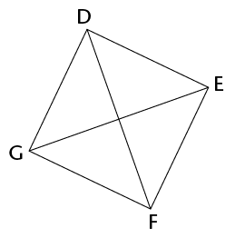
8,49 cm
5. Are the following pairs of triangles congruent? If they are, write down the relationship in the form ΔXYZ ≡ ΔORQ, where X corresponds with O, Y with R, and so on. Also state the congruency condition (case) that proves the two triangles are congruent (for example, sss). If they are not congruent, explain why they are not congruent.
Note: the triangles are not drawn to scale.
(a)
Yes.
ΔABC ≡ ΔEFD (sss)
(b)
No. The triangles are not congruent, since the angles
that are equal are not the included angles.
6. Provide a formal proof that the two triangles in the diagram below are congruent:
One possible proof:
In ∆PQR and ∆TSR
= (alternate angles; PQ // ST)
= (alternate angles; PQ // ST)
PR = TR (give)
∴ ∆PQR ≡ ∆TSR (saa)
7. Study the diagram alongside:
Prove that ΔSRP
ΔSQT.
In ∆SPR and ∆STQ
(SR) =(SQ) (corresponding angles; PR // QT)
(SP) =(ST) (corresponding angles; PR // QT)
is common
∴ ∆SPR /// ∆STP (aaa)
geometry of straight lines
1. Determine the size of P Q.
Q.
PN = 90° (sum of ∠s on a str. line = 180°)
3x − 20° + x + 10° = 90°
4x − 10° = 90°
4x = 100°
x = 25°
PQ = 3x − 20°
= 3(25°) − 20°
= 55°
2. Determine the size of x in each case. Show all steps of your working and give reasons when using any geometrical theorem:
(a)
57,5°
(b) Given: EH = EJ
70°
(c) A G = x; B
G = x; B D = 130° and C
D = 130° and C J = 72°
J = 72°
122°
(d)
30°
3. For which value of x are AB and CD parallel? Show all steps of your working and give reasons when using any geometrical theorem.
∠BEF = 3x − 10° (vert. opp. ∠s are equal)
If AB and CD are parallel, then the co-interior
angles ∠BEF and ∠DFE will have a sum of 180°.
So 3x − 10° + 2x + 20° = 180°
5x + 10° = 180°
5x = 170°
x = 34°
pythagoras’ THEOREM
1. Calculate the missing side length in each of the following triangles:
(a) (b)
IG = 
BC = 
2. A river is 50 m wide. Assume that the river flows completely straight. If Camelia swims
across the river to a point on the bank 12 m downstream from the point directly opposite her, how far will she swim? Give your answer correct to one decimal place.
She will swim across a diagonal.
= 51,4 m
3. Triangle LMN is isosceles, with LM = LN. MN = 36 cm and LP = 24 cm. Determine the perimeter of the triangle.

LP bisects MN.
To find the sides of the triangle: = 30
Perimeter = 30 + 30 + 36 = 96 cm
4. DEFG is a rectangle, with DE = 20 cm and diagonal EG = 101 cm. Determine the area of the rectangle.
Side of rectangle = = 99 cm
99 cm × 20 cm = 1 980 cm2
5. Is it possible to have a right-angled triangle with the following side lengths: 36; 76 and 84? Show all working necessary to support your answer.
362 + 762 = 7 072
842 = 7 056
No, since 362 + 762 ≠ 842.
area and perimeter of 2D shapes
1. Determine (i) the perimeter, and (ii) the area, of each of the following shapes. If necessary, give your answers in centimetres or square centimetres, correct to one decimal place:
(a) BF = 8 cm; BC = 10 cm; FD = 6 cm
(i) 37,9 cm
(ii) 80 cm2
(b) GI = 12 cm; JK = 6 cm and JK : KH = 1 : 2
(i) 43,8 cm
(ii) 108 cm2
(c) The shape alongside is that of a window, consisting of a rectangular section
HJKL, and a semi-circular top section. HJ = 0,5 m and JK = 0,2 m.
(i) 151,4 cm
(ii) 1 157,1 cm2
2. A button is made in the shape of a circle, with two congruent rectangles cut out, as shown in the diagram. The diameter of the button is 25 mm and the dimensions of each rectangle are 12 mm by 3 mm. Calculate the area of the top surface of the button in square centimetres.
Radius = 1,25 cm
Area = πr 2 − 2(1,2 × 0,3)
= π(1,25)2 − 0,72 ≈ 4,2 cm2
3. A rectangle has length 3d and width 7e. Write simplified expressions for the:
(a) Area of the rectangle
length × width = 3d × 7e = 21de
(b) Perimeter of the rectangle
Perimeter = 2(3d) + 2(7e) = 6d + 14e
4. Complete the unshaded blocks in following table to show the impact on the perimeter and area of doubling one dimension of the shape (for a rectangle, the length; for a triangle, the base; and for a circle, the radius). Assume that the original perimeter was x, and the original area was y. One answer has already been added for you.
|
|
Rectangle
|
Triangle
|
Circle
|
|
New perimeter/circumference
|
|
|
|
|
New area
|
2y
|
|
|
Assessment
In this section, the numbers in brackets at the end of a question indicate the number of marks the question is worth. Use this information to help you determine how much working is needed. The total number of marks allocated to the assessment is 60.

1. (a) Construct a triangle RST with RS = 7,3 cm,  = 42°; and
= 42°; and  = 67°. (3)
= 67°. (3)
Use a protractor and ruler to check that the learners’ constructions are accurate.
Allow an error of up to 1 mm and 1° .
(b) Construct the bisectors of each of the angles of the triangle that you
constructed in part (a). You should find that they have a common point of
intersection. (4)
(c) Use the common point of intersection of the bisectors of the angles that you
constructed in part (b) as the midpoint of a circle touching all three sides of
the triangle. Use your compass to draw this circle. (1)
(d) Is it always possible to draw a triangle given the length of one of the lines and
the sizes of the angles adjacent to that line (as was given in part (a), for
example)? Explain your answer. (2)
No, if the two angles you are given add truct the triangle.
(e) Construct the following angle without using a protractor: 150°. (2)
(f) Mthunzi is thinking of a quadrilateral and provides the following clue to Sam:
“Its diagonals cut perpendicularly, but not all the sides of the shape are equal
in length.” Help Sam by writing down the special name of the shape. (1)
Kite
(g) Look at the figure below. Write down an equation, and use it to determine
the size of x. (3)
2x + 12 = 4x − 32; x = 22°

2. Study the diagram alongside:
(a) Prove that ΔJNM ≡ ΔKNL.
(4)
In ∆JNM and ∆KNL
= (given)
(JM) =(KL) (vertically opposite angles)
JM = KL (given)
∴ ∆JNM ≡ ∆KNL (saa)
(b) Do you have enough information to prove that ΔJLM ≡ ΔKML? Explain your
answer. (2)
No, since although there are three sides or angles that are the same in each
triangle, the combination is not a case of congruency.
(c) Study the diagram alongside:
Given that ΔCDE ≡ ΔFCG, prove that ED // GF. Give reasons for all statements.
(3)
DC = FC (given: ∆CDE ≡ ∆FCG)
∴ ED // GF (corresponding angles are equal)
3. Study the diagram below. All numerical values represent lengths of sides:
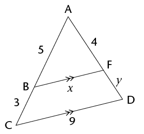
(a) Briefly explain why ΔABF /// ΔACD (a full proof is NOT required). (1)
The triangles have equal angles, so they must be similar.
(b) Use the similarity of the triangles to determine the lengths of the line segments
(correct to one decimal place). (6)
(i) x
5,625
(ii) y
2,4
4. Study the diagram alongside. Determine, with reasons, the size of in terms of x.
(4)
∠RTS is the exterior angle of ΔRTU.
+ ∠R = 2x (ext. ∠ = sum of opp. int. ∠s)
But ∠R = x
∴ + x = 2x
∴ = x
5. Study the diagram alongside. Given that MK = ML, determine, with reasons, the
value of z.
(5)
∠M = 64° (alt. ∠s; JK // ML)
∠LNM = 90° (sum of ∠s on a str. line = 180°)
∴ ∠MLN = 180° − (90° + 64°) = 26°
∴ ∠L = z + 26°
and ∠MKL = z + 26° (isos. Δ, MK = ML)
∠LNM = 90°
and ∠LNM = 2z + 26° (ext. ∠ = sum of opp. int ∠s)
90° = 2z + 26° z = 64 ÷ 2 = 32°
6. Is AC // DF? Explain your answer by means of a proof.
(3)
∠DEJ = 90° + 31° = 121°
∠ABE = 122° (vert. opp ∠s are equal)
No, because the corresponding angles are
not equal.
7. Study the diagram alongside. QRST is
a rectangle. All numerical values represent
lengths:
(a) Calculate the length of UT. (3)
QU2 + QT2 = UT2 (Theorem of Pythagoras)
UT = = 53 units
(b) Calculate the perimeter of triangle TUV, correct to one decimal place. (4)
UR = = 15 (Theorem of Pythagoras)
∴ TS = 60 units
VS = 28 − 8 = 20 units
∴ TV = = 63,2 units (Theorem of Pythagoras)
Perimeter = 53 + 63,2 + 17 = 133,2 units
8. A rectangle has an area of 6a2 and a perimeter of 10a. Determine, in terms of a, the
dimensions of the rectangle. (2)
Width = 2a
Length = 3a
9. On the grid below, draw a parallelogram that has the same area as the triangle. (2)
Two possibilities are shown below. The parallelogram should have an area of
6 square units:

10. The perimeter of a rhombus is 60 cm, and the length of one of its diagonals is 24 cm.
(a) Calculate the length of a side of the rhombus. (1)
60 cm ÷ 4 = 15 cm
(b) Show that the area of the rhombus is 216 cm2. (4)
The diagonals bisect each other at right angles, so half of 24 cm = 12 cm.
Use Pythagoras to find half the other diagonal = = 9 cm
Now we have four equal right-angled triangles.
Area = 4() base × perp. height
= 2(9) × 12
= 18 × 12
= 216 cm2